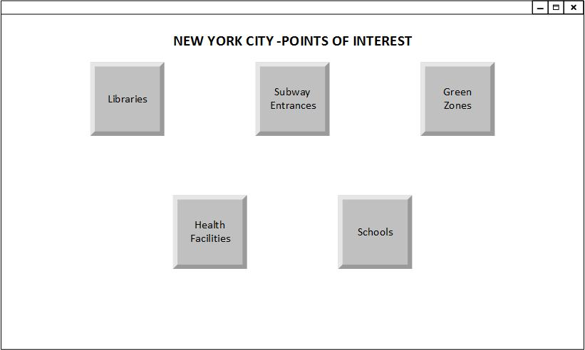
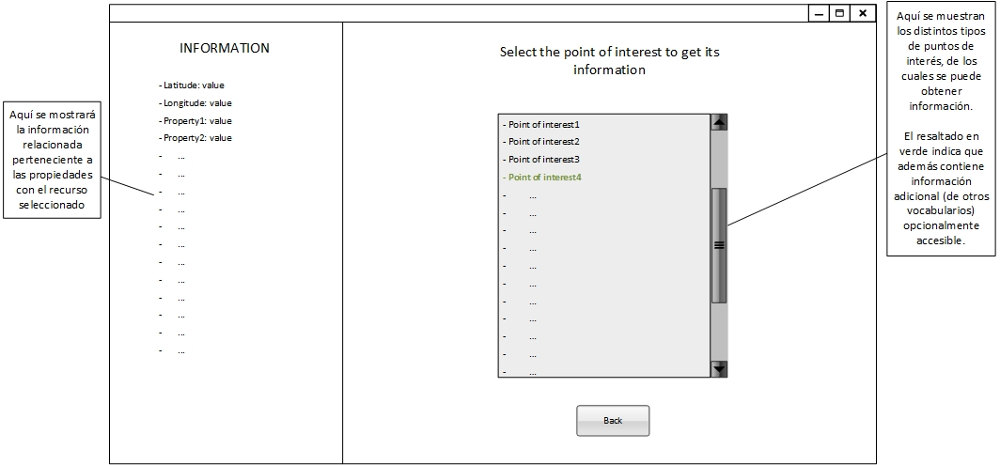
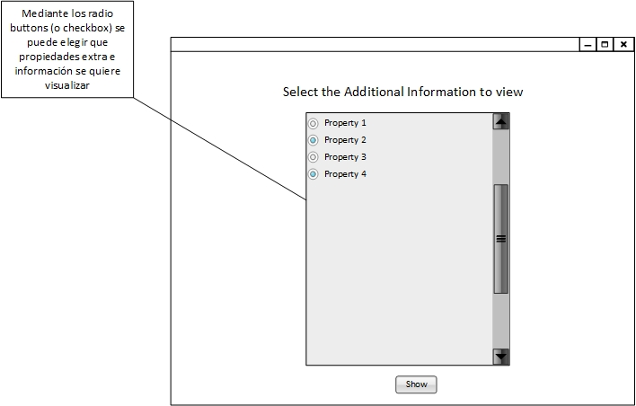
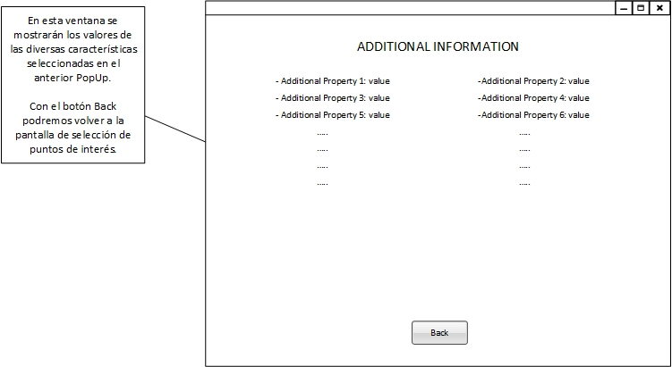

Requisitos de la aplicación
Descripción General
La aplicación utilizará los datos presentes en los datasets recogidos, así como también los datos de los dataset con los que se lincarán. Dicha aplicación estará orientada a proporcionar información de los distintos puntos de interés de la ciudad de Nueva York, como librerías, zonas verdes, escuelas, transporte público y hospitales. La aplicación en su inicio pretendía ayudar a encontrar el lugar ideal para vivir y comprar una casa en función de las preferencias del cliente, así como de ciertos análisis realizados por la aplicación, pero ya que finalmente se comunicó que debía estar basada en la explotación de datos mediante queries SPARQL, el análisis que pretendiamos realizar acerca de puntos de interés cercanos a un lugar determinado se ha visto mermado, puesto que nuestra intención inicial era explotar los datos pero montados éstos sobre bases de datos relaciónales, lo cual realmente nos impedía explotar los datos linkados. Finalmente se ha decdido que la aplicación será una aplicaciń informativa de las distintas carácteristicas de los puntos de interés de la ciudad de Nueva York.
Requisitos
- La aplicación debe poder permitir la elección de los puntos de interés a mostrar
- La aplicación debe poder permitir mostrar la distinta información de los puntos de interés mediante el clickado de éstos, los cuales se mostrarán en una lista
- La aplicación debe mostrar resaltados (en color verde) aquellos puntos de interés de los que se pueda obtener información adicional a través de otras ontologías como dbpedia.org, YAGO, etc.
- La aplicación debe mostrar y permitir elegir el tipo de información adicional que se quiera obtener de los recursos también representados en dichas ontotologías externas
- La aplicación debe poder permitir mostrar una ventana con información ampliada de aquellos recursos indexados en dichas ontologías externas
En función de los puntos de interés seleccionados por el cliente se mostrará la información consecuente a la selección.
Mock-ups
Mock-up de la pantalla principal de la aplicación:

Mock-up de la pantalla secundaria de la aplicación:
En la cual se mostrará la lista de puntos de interés, en funcion del ambito seleccionado, de los cuales se podrá obtener la información clicando en ellos.

Mock-up del Pop-up de selección de propiedades adicionales:
Para aquellos puntos de interés resaltados en verde, se podrá acceder a un panel especial para seleccionar características adicionales, las cuales son extraídas de ontologías externas.

Mock-up del Pop-up de información adicional:
En esta ventana se mostrará la información correspondiente a las características adicionales seleccionadas en el anterior Pop-up.
